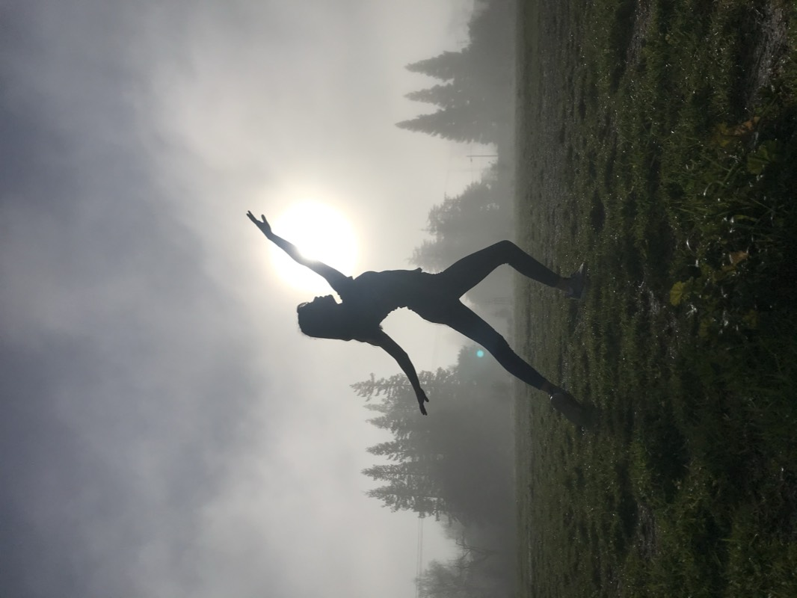

About
Hi! I'm Zoelie, a Dean's List student at UC Berkeley studying Data Science and Philosophy. I'm interested in how evolving tech is changing people's lives, so I think a lot about how to build systems that people can understand and trust.

